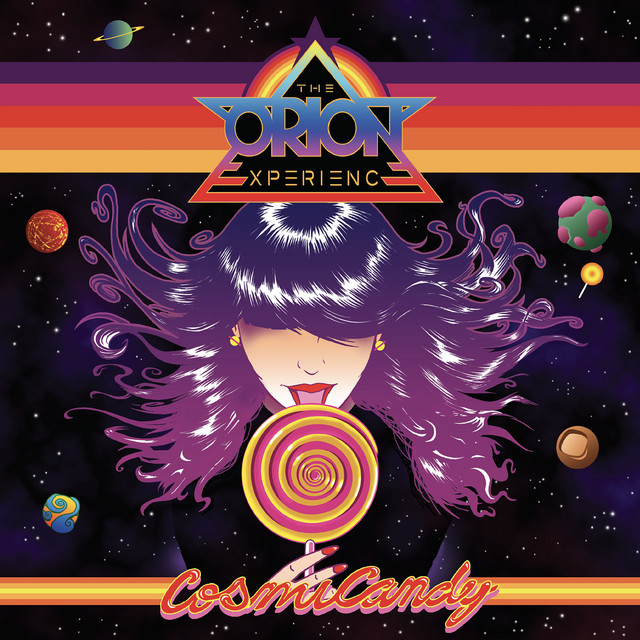
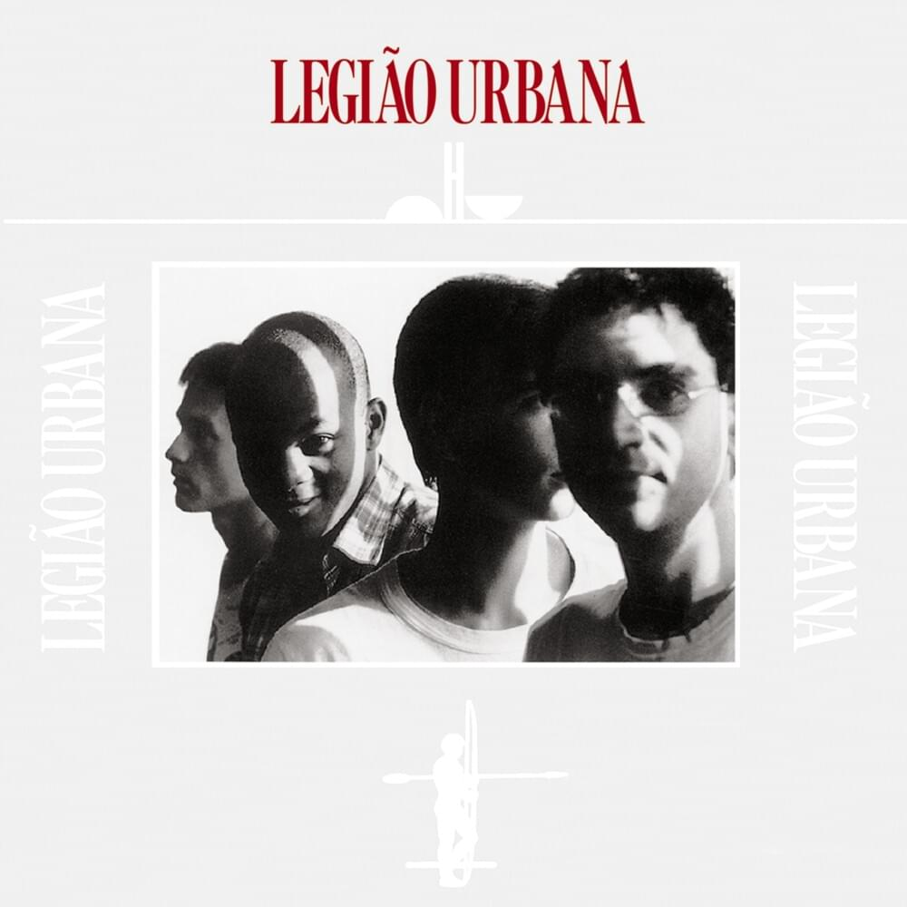

4 músicas que você deveria escutar
- Fuck The System
- Wet
- The Cult Of Dionysus
- Geração Coca-Cola
ATENÇÃO A DUAS COISAS
- Muitas das músicas aqui recomendadas tem palavrões e apontam tabus
- Lógicamente as músicas são baseadas no meu gosto então você pode não gostar
- FUCK THE SYSTEM - SOAD
- Trabalho divertido de guitarra, vocais selvagens,
rápidos e cativantes, tem tudo o
que há para gostar em uma música do System of a Down.

música no youtube
- WET - DAZEY AND THE SCOUTS
- A música 'Wet' de Dazey and the Scouts investiga a
turbulência emocional da solidão
e o desejo de intimidade. A letra pinta uma imagem vívida do protagonista sozinho em
seu quarto, refletindo sobre um relacionamento passado. A justaposição de umidade
física e emocional serve de metáfora para o desejo do protagonista e as lágrimas
derramadas pela conexão perdida. A frase 'Eu sou meu braço direito' sugere autossuficiência
e independência, mas há um tom subjacente de falta do companheirismo e da intimidade
física da pessoa com quem eles estiveram.
música no youtube
- THE CULT OF DIONYSUS - THE ORION EXPERIENCE
- um culto poliamoroso do deus Dionisio

música no spotify
- GERAÇÃO COCA-COLA - LEGIÃO URBANA
- Também conhecidos como “Geração Coca-Cola”, em
referência à música homônima
da banda Legião Urbana, a Geração X se trata das pessoas nascidas aproximadamente
entre o início dos anos 1960 e meados dos anos 1980, embora as datas exatas possam
variar dependendo da fonte

música no spotify